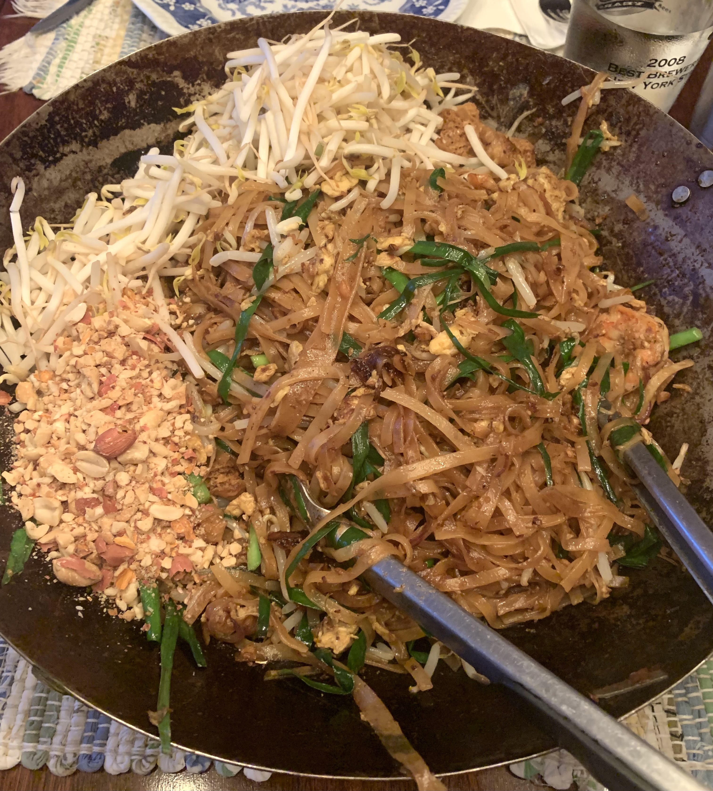

Pad Thai

Authentic Pad Thai is usually something you refer to a restaurant to make, but I'm telling you now that you can make it and it very well may be the best thing you've ever had. It's not a difficult recipe to make at home, all it takes is a little technique.
- 2 oz tamarind pulp
- 1/2 cup boiling water
- 3 tbsp palm sugar, grated
- 2 tbsp fish sauce
- 1 tbsp thai black soy sauce
- 8 oz dried pad thai rice noodles
- 1/2 lbs chicken breast, thinly sliced
- 2 tsp thai sweet or, thin soy sauce and sweet radish
- 1 tsp corn starch
- salt to taste
- 1 tsp white pepper, ground
- 1/3rd cup small dried ground shrimp
- 4 garlic cloves, sliced
- 2 shallots, thinly sliced
- 1.5 tbsp zha cai, finely minced (optional, but necessary)
- 3 large eggs
- 1 cup mung bean sprouts
- 1 cup chinese garlic chives
- 4 tbsp roasted peanuts, finely chopped
- 2 limes
-
In a small bowl, cover tamarind pulp with boiling water and mix until combined and rehydrated then press through a mesh sieve.
-
Add in palm sugar, fish sauce, and black soy. Whisk until incorporated.
-
Slice chicken breasts into one third slices. Toss together with kosher salt, ground white pepper and cornstarch. Add soy sauce and toss together.
-
Place noodles in a large bowl and cover with hot water. Soak for 15-20 minutes until done then drain.
-
For dried shrimp, place dried shrimp into the food processor and process at high speed into a powder.
-
In a large wok over medium-high heat, add vegetable oil and once shimmering add chicken in batches, stir 2-3 minutes per side. Set to the side.
-
Add more oil to the wok over medium-high. Once ripping hot, add in ground shrimp. Shake the pan and stir vigorously until golden brown and toasted.
-
Add in shallots and stir fry 2-3 minutes before adding in garlic and stir frying another 2-3 minutes.
-
Optionally add in zha cai and stir fry 1-2 minutes.
-
Add in the noodles followed by the pad thai sauce. Increase heat to high and stir vigorously until fully incorporated.
-
Reduce heat to medium-high. Push noodles to one side, add in beaten eggs and let cook for 30 seconds before scrambling.
-
Toss eggs with noodles until incorporated.
-
Add in chinese garlic chives, mung bean sprouts, and cooked chicken. Stir fry until chives begin to wilt.
-
Remove from heat. Plate with crushed peanuts, fresh mung bean sprouts, and lime wedges.
Recipe Credit to Joshua Weismann. All rights reserved